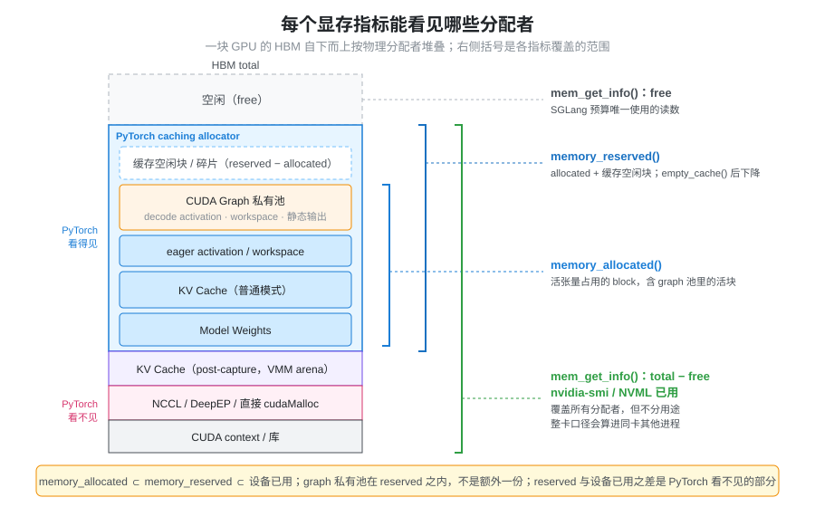
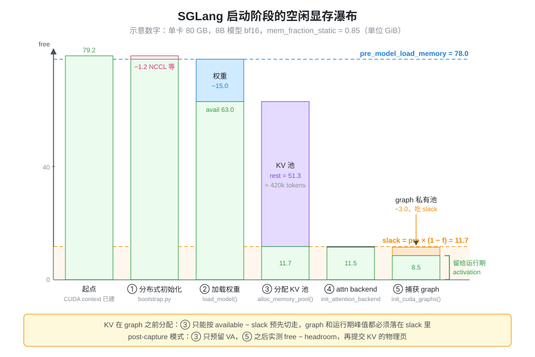

- 启动日志里每个阶段都打印了
mem usage，加起来却和nvidia-smi对不上，差的那部分去哪了？ --mem-fraction-static=0.85是不是说 85% 的显存给了权重和 KV cache？- VRAM Usage 把显存分成七类，为什么不能把七类各自估一个数再相加？
本篇是 VRAM Usage 的展开：那一页回答“显存被用来做什么”，这一页回答“这笔账该怎么记、怎么测”，以及 SGLang 启动时怎样从一块 GPU 的总显存一步步算出 KV cache 能放多少 token。分配器内部的 block、碎片和 CUDA Graph 私有池细节见 显存管理与生命周期，这里不重复。
问题：同一块显存可以被记两次，也可能一次都没记
做显存预算时最自然的做法是列清单：权重多少、KV 多少、activation 多少、CUDA Graph 多少，相加得到总量。这个做法会在两个方向上出错。
重复计算。 七类是按“逻辑用途”划分的，而显存是按“谁调用了分配接口”实际占用的。一个 decode activation 张量如果是在 CUDA Graph capture 期间分配的，它就躺在 graph 私有池里——它既是 activation，也是 CUDA Graph 显存，也属于 PyTorch allocator 的 reserved。分别估算三类再相加，同一块显存会被算三次。
漏算。 反过来，有一些显存根本不经过
PyTorch：CUDA context、NCCL 的通信 buffer、第三方库直接
cudaMalloc 的区域、用 CUDA VMM
接口自己映射的内存。只看
torch.cuda.memory_reserved()
的人会觉得“明明还有很多空闲”，直到驱动拒绝下一次分配。
所以问题不是“七类各占多少”，而是：每一字节显存由哪个分配者持有、活多久，以及我们手上的指标能看到哪些分配者。
抽象：两个维度记账，用“空闲显存的差分”测量
把每一笔显存放进一个二维表里：
- 逻辑用途（七类）：回答“为什么需要它”，用于理解和优化；
- 物理分配者：PyTorch caching allocator
的普通池、CUDA Graph 私有池、NCCL/通信库、直接
cudaMalloc/VMM、CUDA context；回答“谁持有它、哪个指标看得见它”。
一个逻辑类别可能分散在多个分配者里（KV cache 通常走 PyTorch allocator，开启 post-capture sizing 时走 VMM），一个分配者里也混着多个逻辑类别（graph 私有池里同时有 activation、workspace 和静态输出 buffer）。预算应按物理分配者加总，用途只用来解释每个分配者里装了什么。
那么怎么测？只有一个指标能覆盖所有分配者：驱动报告的设备空闲显存（cudaMemGetInfo，即
torch.cuda.mem_get_info()）。它不区分用途，但任何一次分配——无论走不走
PyTorch——都会让它变小。于是关键的工程手法是：在每个初始化阶段前后各测一次空闲显存，把差值记给这个阶段。
阶段顺序是确定的，差值之和加上最后剩余，正好等于起点时的空闲量，账一定能对平；而阶段之内装了什么，再用
allocator 指标或 snapshot 细分。

图里最需要记住的是两条包含关系：memory_allocated ⊂ memory_reserved ⊂ 设备已用，而
graph 私有池在 memory_reserved
之内、不是额外的一份。memory_reserved
和“设备已用”之间的差，就是 PyTorch 看不见的那部分。
七类显存落在哪个分配者里
把 VRAM Usage 的七类映射到物理分配者，重叠和盲区就一目了然：
| 逻辑类别 | 典型物理分配者 | memory_reserved 能否看到 |
相加时的陷阱 |
|---|---|---|---|
| Model Weights | PyTorch allocator（普通池） | 能 | 量化权重的 scale、packed 布局也在这里 |
| KV Cache | PyTorch allocator；post-capture 模式下是 VMM arena | 普通模式能；VMM 模式不在常规池里 | KV 的大小由“剩余量”反推，不是独立输入 |
| CUDA Graph | allocator 的 graph 私有池 | 能（属于 reserved 的一部分） | 和 decode activation、workspace 是同一块 |
| Runtime Workspace | allocator 缓存块，或库自管 | 部分能 | 走 allocator 的部分和 activation 共享缓存 |
| Activation | allocator 普通池，或 graph 私有池 | 能 | eager 的峰值与 graph 内的 activation 不能同时计 |
| Allocator 开销 | allocator 缓存与碎片 | 能（reserved − allocated） | 它本身就是前几类的“包装损耗” |
| Context / 通信 | 驱动、NCCL、DeepEP、直接 cudaMalloc |
不能 | 只能通过设备空闲显存的差分看到 |
可以看出，第 3、5、6 类大量重叠，第 7 类则完全在 PyTorch 视野之外。这就是 VRAM Usage 结尾那句话的含义：显存预算按实际独立分配的物理内存计算，而不是把七类机械相加。
SGLang 启动时的显存账：从总显存到 KV 容量
SGLang 的启动顺序本身就是一套“阶段差分”记账。按
managers/scheduler.py 的
init_model_worker() 和
model_executor/model_runner.py 的调用顺序，一个
target worker 依次经过：
- 初始化分布式（
distributed/bootstrap.py）：建立 TP/PP/EP 通信组，按需预热 NCCL。阶段末测得的空闲显存记为pre_model_load_memory，它是后面一切预算的基准。 - 加载权重（
ModelRunner.load_model()）：前后各测一次，差值存为weight_load_mem_usage。 - 分配 KV
池（
ModelRunner.alloc_memory_pool()→KVCacheConfigurator.configure()）：此时才根据剩余空闲显存算出能放多少 token，然后一次性分配。 - 初始化 attention backend，捕获 CUDA
Graph（
init_cuda_graphs()→model_runner_components/cuda_graph_setup.py）：prefill 与 decode 的 capture 各自前后测量。 - 可选：post-capture 调整
KV（
post_capture_resize_kv_pool()），见后文。

这个顺序有一个直接后果：KV 池在 CUDA Graph
之前分配。 KV 的大小必须提前给 graph、activation 和
workspace 留出余量，而这份余量在分配 KV 时还无法实测——这正是
mem_fraction_static 要解决的问题。
KV 容量怎么算
mem_cache/kv_cache_configurator.py 的
_profile_available_bytes()
是整套预算的核心，三行就能概括：
slack_gb = pre_model_load_memory * (1 - mem_fraction_static) # 留给运行期
rest_memory = available_gpu_memory - slack_gb - mm_reservation_gb # 留给 KV
# 之后：max_total_num_tokens = rest_bytes // cell_size，再按 page_size 向下取整其中 available_gpu_memory
是权重加载完之后测得的空闲显存，mm_reservation_gb
是多模态特征传输的额外预留（纯文本模型为
0）。cell_size 是一个 token 在所有层上占用的 KV
字节数，由 model_executor/pool_configurator.py
按模型类型计算；标准 MHA/GQA 为
kv_heads × (head_dim + v_head_dim) × layers × dtype 字节数，FP4、MLA、SWA、混合
Mamba 等各有自己的 configurator。得到的 token 数再经过
_apply_token_constraints()：取用户
--max-total-tokens 与实测值的较小者，多 PP
stage 时在各 rank 间取最小值。
旧版本里这段逻辑叫
profile_max_num_token，现在已拆成
_profile_available_bytes()（算字节预算）和各个
pool configurator（把字节换成
token），读老文章时注意对应关系。
一个示意算例（数字为说明用，非实测）：单卡 80
GB，Llama-3-8B
bf16，mem_fraction_static=0.85。
| 量 | 数值 | 说明 |
|---|---|---|
pre_model_load_memory |
78.0 GiB | 分布式初始化后的空闲显存 |
slack_gb |
78.0 × 0.15 = 11.7 GiB | 留给 graph、activation、workspace |
| 权重 | 15.0 GiB | 8B 参数 × 2 字节 |
available_gpu_memory |
63.0 GiB | 权重加载后的空闲显存 |
rest_memory |
63.0 − 11.7 = 51.3 GiB | 全部交给 KV |
cell_size |
8 × (128 + 128) × 32 × 2 = 128 KiB | 8 个 kv head、32 层、bf16 |
max_total_num_tokens |
51.3 GiB ÷ 128 KiB ≈ 420k | 再按 page_size 取整 |
注意 SGLang 日志里的 “GB” 都是
/ (1 << 30) 算出来的，实际是
GiB；nvidia-smi 报的是
MiB，对账前先统一单位。
如果
rest_memory <= 0，_profile_available_bytes()
直接抛 ValueError，提示把
mem_fraction_static 调到大于
1 − available / pre_model_load_memory。含义是：权重本身已经吃掉了超过
f 比例的显存，KV 一个 token 都放不下。
mem_fraction_static
的真实含义
server_args.py 对这个参数的说明是 “(model
weights + KV cache pool) / GPU memory
capacity”，但实现里的分母不是总容量，而是
pre_model_load_memory：
静态预算 = pre_model_load_memory × f （权重 + draft 权重 + KV + 二者之间分配的一切）
运行余量 = pre_model_load_memory × (1 − f) （CUDA Graph、activation、workspace、之后的通信 buffer）所以回答开头的问题：0.85 不是“总显存的 85%
给权重和 KV”。CUDA context、分布式初始化阶段的 NCCL 预热在
pre_model_load_memory
之前就已经扣掉，不在任何一边；静态预算里也不只有权重和
KV，凡是在测量 pre_model_load_memory 之后、分配
KV 之前占用的显存（例如 speculative decoding 的 draft
模型权重）都从这 85% 里出；而 15% 的余量要装下之后的 CUDA
Graph capture
和运行期峰值。pre_model_load_memory
在多卡时还是各 rank 的最小值（distributed=True
时 all_reduce MIN），一张卡被别的进程占了显存，所有 rank 的
KV 都会跟着缩小——bootstrap.py 的
_check_tp_memory_balance() 会在某个 rank
低于本地 90% 时打印 “The memory capacity is unbalanced”
警告。
不指定时的默认值
mem_fraction_static 默认为
None，由
ServerArgs._handle_gpu_memory_settings()
按“要给运行期留多少 MB”反推：
reserved_mb = 512 # 固定底数
+ activation_tokens × 1.5 # 运行期 activation 估计
+ tp × pp / 8 × 1024 # 并行规模越大，通信与杂项越多
+ reserve_for_graph_mb() # CUDA Graph，按 cuda_graph_max_bs 等估算
(+ reserve_for_deepep_a2a_mb()) # DeepEP all-to-all 且开启 decode graph 时 +2048
mem_fraction_static = round((gpu_mem − reserved_mb) / gpu_mem, 3)activation_tokens 取
max(chunked_prefill_size, 2048)（开启 chunked
prefill 时）、max(max_prefill_tokens, 2048)，PD
分离的 decode 实例则按
max_running_requests × draft_tokens
估；总显存大于 60 GB 时余量至少 10 GiB；拿不到显存容量时退回
0.88，多模态模型另有修正。这里的 gpu_mem 是
nvidia-smi 报的总容量，而公式最终作用在更小的
pre_model_load_memory
上，所以实际留出的余量会比 reserved_mb
略少。
这套默认值的本质是经验估计：graph 和 activation 的真实大小要到 capture 之后才知道。估大了浪费 KV 容量，估小了在 capture 或高峰期 OOM。
Post-capture KV sizing：先 capture，再定 KV
既然困难在于“KV 必须在 graph 之前分配”，另一种做法就是把顺序反过来——但 CUDA Graph 回放要求 KV buffer 的地址在 capture 时就固定。SGLang 的实验性方案用 CUDA VMM（虚拟内存管理）把“地址”和“物理显存”拆开：
分配 KV 时只预留虚拟地址。
memory_pool.py的_alloc_post_capture_buffers()按上限 token 数为每层 K/V 预留一段 VA，底层是mem_cache/kv_vmm_backing.py的KvVmmArena（经CUDAPluggableAllocator接入的 bump allocator），只先映射够跑 capture 的一小段前缀。此时日志打印的是 “VA upper bound”，而不是实际占用。照常 capture CUDA Graph。 graph 记住的是 VA，之后映射多少物理页都不改变地址。
实测空闲显存，再决定 KV。
kv_pool_runtime.py的compute_post_capture_kv_resize()先torch.cuda.synchronize()，再测一次（多卡取最小值）空闲显存，计算：headroom = pre_model_load_memory * (1 - mem_fraction_static) # 部分情况抬高到 pre_capture_activation_reserve_mb budget = max(0, free - headroom - mm_reservation) + pool.post_capture_backed_bytes然后用同一套 configurator 把
budget换成 token 数（上限为第 1 步的 VA 容量），由finalize_backing()一次性cuMemMap到位，并相应resizetoken allocator，必要时下调max_running_requests。
这样 slack 不必再替 graph 预留：graph 已经实际占用、已被
free
体现，_handle_gpu_memory_settings()
在这一模式下也只保留 1536 + tp × pp / 8 × 1024
MB。剩下的 headroom 只需覆盖 eager 路径（decode graph 的 max
bs 小于 max_running_requests 时）和 Mamba
等模型的运行期 activation。
开启条件比较苛刻：环境变量
SGLANG_ENABLE_POST_CAPTURE_KV_SIZING（默认关闭），CUDA
设备，非 MLA、非 FP4 KV、非量化
KV，dcp_size == 1，未启用 memory saver 和自定义
Mooncake 内存池，decode CUDA Graph 未禁用；draft worker 共享
target 的池，不单独走这条路径。条件见
server_args.py 的
post_capture_kv_sizing_planned() 和
kv_pool_runtime.py 的
is_post_capture_kv_active()。
统计口径：每个指标看见什么
| 指标 | 来源 | 看得见 | 看不见 / 注意 |
|---|---|---|---|
torch.cuda.memory_allocated() |
PyTorch allocator | 活着的张量占用的 block | 缓存空闲块、context、NCCL、直接
cudaMalloc |
torch.cuda.memory_reserved() |
PyTorch allocator | allocated + 缓存空闲块，含 graph 私有池 | allocator 之外的一切；empty_cache()
后会下降 |
torch.cuda.max_memory_allocated() |
PyTorch allocator | 自上次 reset 以来的峰值 | 同 allocated；用于量 activation 峰值 |
torch.cuda.mem_get_info() |
cudaMemGetInfo |
整卡的 free / total | 不分用途；其他进程的占用也算进去 |
nvidia-smi / NVML |
驱动 | 每个进程的占用、整卡已用 | 不分用途；单位 MiB；进程级数字含 context |
SGLang 的启动预算只用
mem_get_info：utils/common.py 的
get_available_gpu_memory() 默认先
empty_cache() 把 allocator
的缓存块还给驱动，再读 free 值；多卡时对所有 rank
取最小值；集成显卡（props.is_integrated）改用
psutil 的主机可用内存。这个选择保证了 PyTorch
之外的分配也被计入，但也意味着同卡上的其他进程会直接挤占 KV
容量。
日志里的两类字段由此而来：
avail mem=… GB：该时刻的mem_get_info空闲值。mem usage=… GB：同一阶段前后两次avail mem之差，即这个阶段的显存增量。
按阶段对照的日志行：
| 阶段 | 日志关键字 | 用途 |
|---|---|---|
| 分布式初始化 | Init torch distributed ends. … mem usage= |
通信组与 NCCL 预热的开销 |
| 加载权重 | Load weight end. … avail mem=… mem usage= |
本 rank 的权重分片大小 |
| 分配 KV | KV Cache is allocated. … #tokens: … K size: … V size:，Memory pool end. avail mem= |
KV 容量与剩余显存 |
| 捕获 graph | Capture … CUDA graph end. … mem usage=… avail mem= |
prefill / decode / verify 各自的 graph 开销 |
| post-capture | Post-capture KV sizing: KV cache allocated. … |
最终 KV 容量 |
| 就绪 | max_total_num_tokens=… available_gpu_mem=… GB |
服务开始前的余量 |
最后一行的 available_gpu_mem 用的是
empty_cache=False，即 allocator
的缓存块不还给驱动；它就是运行期 activation
峰值真正能用的空间（加上 allocator 里已缓存的部分）。
排查顺序：对不上账时先看什么
- 先统一口径。 日志的 GB 是
GiB，
nvidia-smi是 MiB；mem_get_info是整卡，NVML 进程列表是单进程。先确认同卡上没有别的进程。 - 按阶段读
mem usage。 分布式初始化、权重、KV、各类 graph capture 的增量加上最后的available_gpu_mem，应该约等于起点的空闲显存；哪一段异常大，问题就在哪个阶段。 - 再把差值拆给分配者。 阶段增量与该阶段
memory_reserved的变化比较：两者接近，说明大头在 PyTorch allocator 里，可以用 memory snapshot 继续细分（方法见 显存管理与生命周期）；差距大，说明是 NCCL、DeepEP、VMM 或第三方库的直接分配。 - 运行期 OOM 看余量而不是 KV。 启动后 KV
已经常驻，运行期 OOM 来自 activation、eager 路径的 workspace
或碎片。对策是降低
mem_fraction_static（直接加大余量），或减小chunked_prefill_size/cuda_graph_max_bs（降低峰值需求）；--max-total-tokens也能通过_apply_token_constraints()截小 KV、间接留出余量，但它不随卡型和并行规模自适应，不如前两者直接。 - 启动期报
rest_memory <= 0。 权重加上 slack 已经超出可用显存：要么调高mem_fraction_static，要么增大 TP/EP 让每卡权重变小。
小结
显存预算有两个维度：七类逻辑用途解释“为什么需要”，物理分配者决定“谁持有、哪个指标看得见”。七类之间大量重叠（graph
私有池、activation、workspace、allocator
缓存），又有一类完全在 PyTorch 视野之外（context、NCCL、直接
cudaMalloc、VMM），所以只能按分配者加总，并用设备空闲显存的阶段差分来测。
SGLang 启动正是这套记账：分布式初始化后测得
pre_model_load_memory，加载权重，再用
available − pre × (1 − f) 一次性分配 KV，最后
capture CUDA Graph。因为 KV 在 graph
之前分配，mem_fraction_static 的
1 − f 必须预先为 graph
和运行期峰值留出余量，默认值也只是按
batch、chunk、并行规模的经验估计；post-capture KV sizing 用
VMM 先固定地址、capture
后再提交物理页，把这份估计换成了实测。读启动日志时，avail mem
是 mem_get_info
的空闲值，mem usage 是阶段增量，二者配合
memory_reserved 和 snapshot，就能把每一 GiB
落到具体的分配者上。